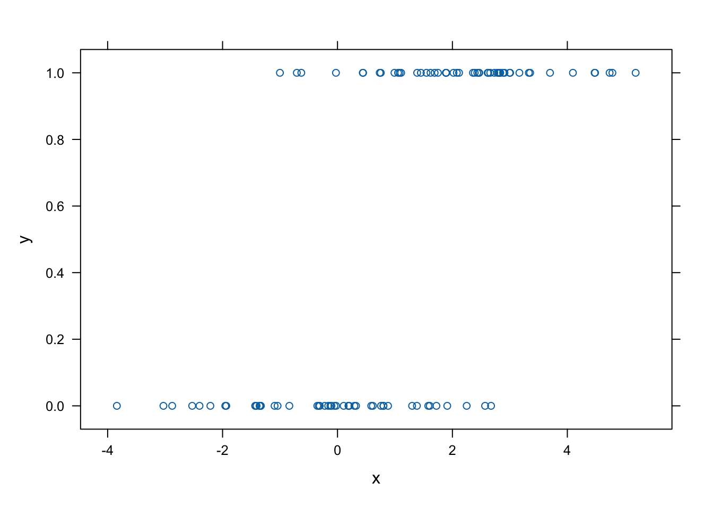
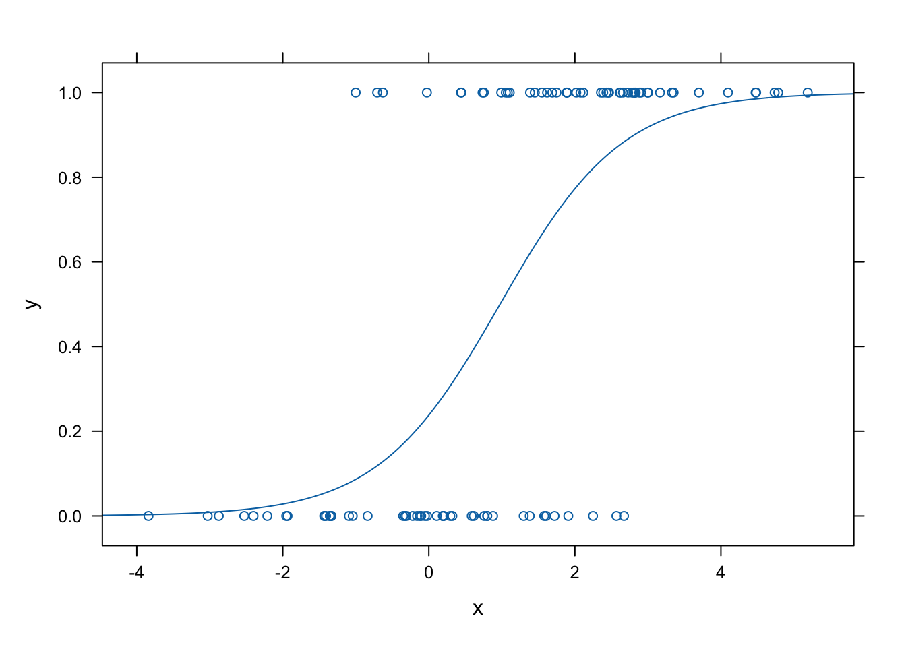
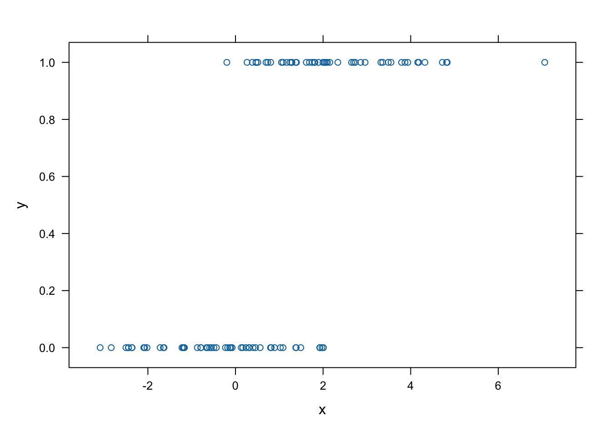
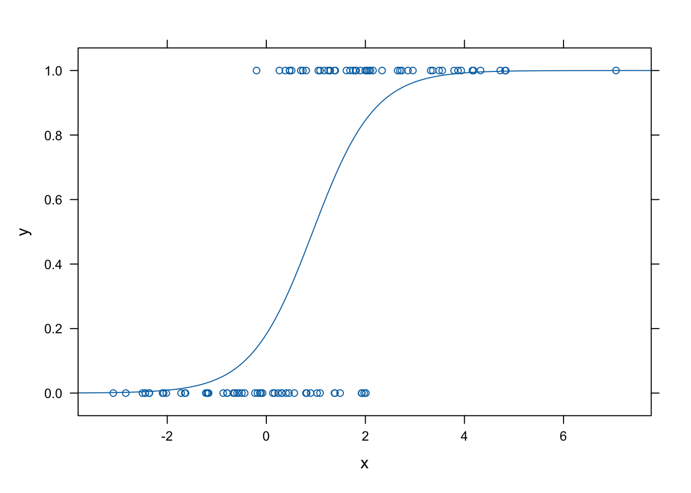
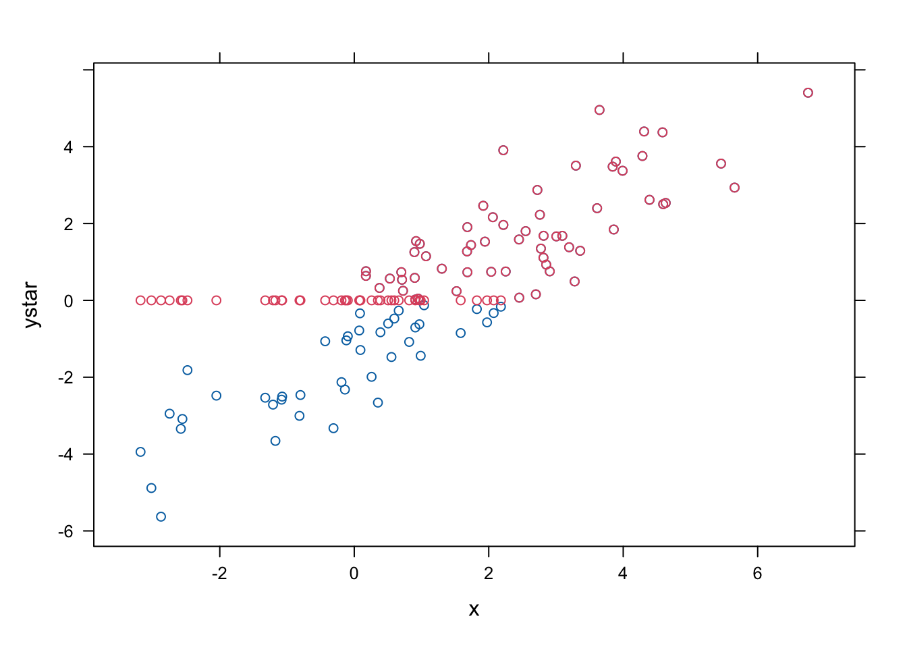
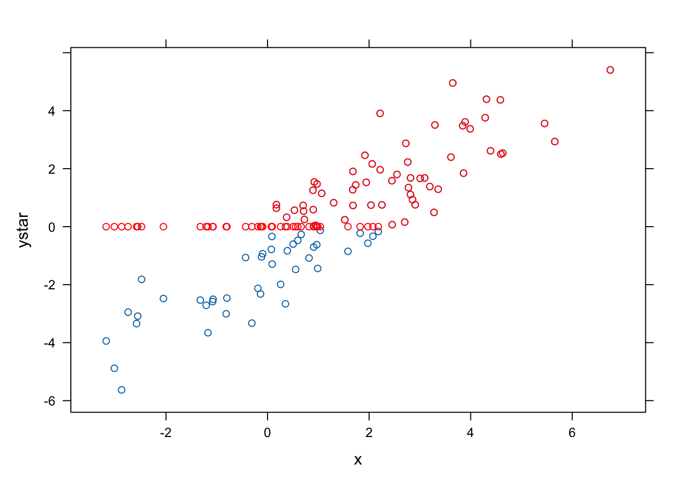
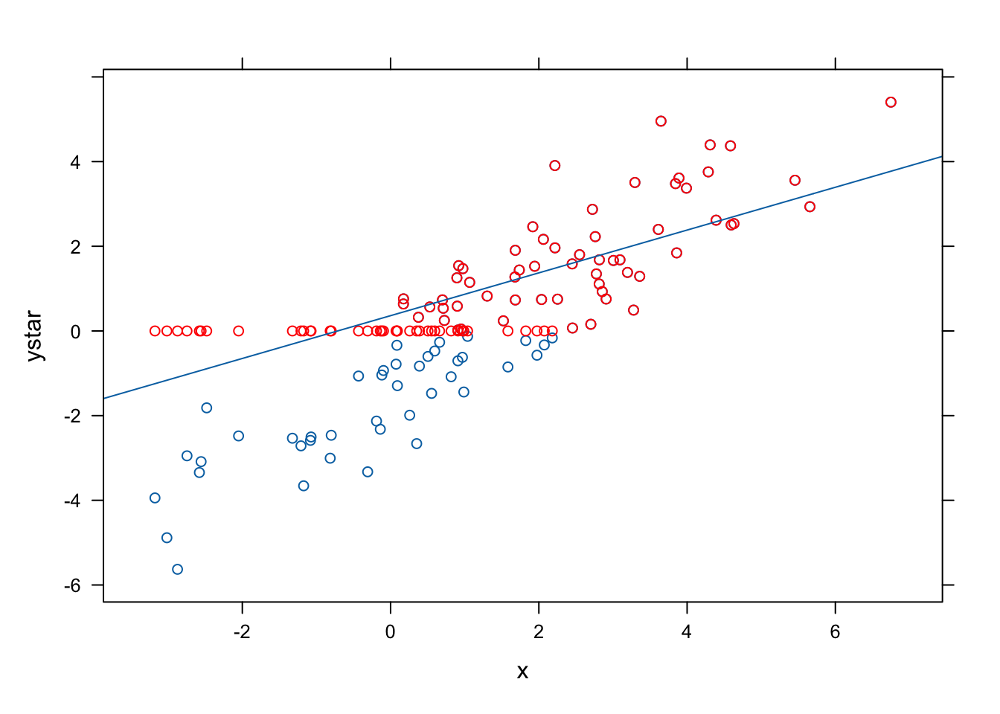
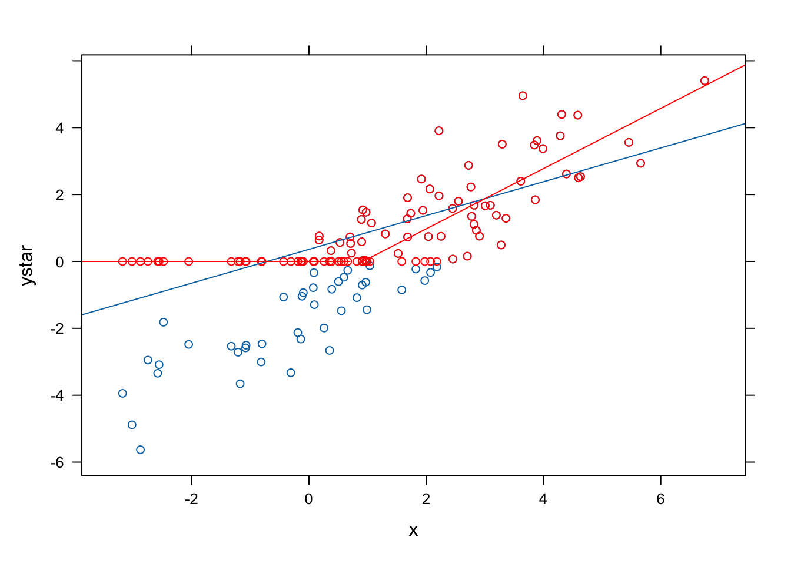

library(AER)
library(mosaic)
library(latticeExtra)
library(stargazer)
set.seed(2000)11 最尤法
11.1 logit
11.1.1 数値計算
N <- 100
x <- rnorm(N, 1, 2)
ystar <- -1 + x + rlogis(N)
y <- ifelse(ystar >= 0, 1, 0)
df <- data.frame(x, y, ystar)fm_logit <- glm(y ~ x, data = df, family = binomial)
summary(fm_logit)
#>
#> Call:
#> glm(formula = y ~ x, family = binomial, data = df)
#>
#> Coefficients:
#> Estimate Std. Error z value Pr(>|z|)
#> (Intercept) -1.1637 0.3692 -3.152 0.00162 **
#> x 1.1938 0.2319 5.148 2.63e-07 ***
#> ---
#> Signif. codes: 0 '***' 0.001 '**' 0.01 '*' 0.05 '.' 0.1 ' ' 1
#>
#> (Dispersion parameter for binomial family taken to be 1)
#>
#> Null deviance: 138.469 on 99 degrees of freedom
#> Residual deviance: 83.891 on 98 degrees of freedom
#> AIC: 87.891
#>
#> Number of Fisher Scoring iterations: 5fn_logit <- makeFun(fm_logit)
xyplot(y ~ x, data = df)
plotFun(fn_logit, add = TRUE)
11.1.2 実証分析
data("SwissLabor", package = "AER")
inspect(SwissLabor)
#>
#> categorical variables:
#> name class levels n missing
#> 1 participation factor 2 872 0
#> 2 foreign factor 2 872 0
#> distribution
#> 1 no (54%), yes (46%)
#> 2 no (75.2%), yes (24.8%)
#>
#> quantitative variables:
#> name class min Q1 median Q3 max mean
#> 1 income numeric 7.186901 10.47231 10.64313 10.88686 12.37565 10.6855675
#> 2 age numeric 2.000000 3.20000 3.90000 4.80000 6.20000 3.9955275
#> 3 education numeric 1.000000 8.00000 9.00000 12.00000 21.00000 9.3073394
#> 4 youngkids numeric 0.000000 0.00000 0.00000 0.00000 3.00000 0.3119266
#> 5 oldkids numeric 0.000000 0.00000 1.00000 2.00000 6.00000 0.9827982
#> sd n missing
#> 1 0.4124888 872 0
#> 2 1.0551675 872 0
#> 3 3.0362587 872 0
#> 4 0.6128700 872 0
#> 5 1.0867863 872 0ロジットモデルで推計する.
swiss_logit <- glm(participation ~ . + I(age^2),
data = SwissLabor, family = binomial)
summary(swiss_logit)
#>
#> Call:
#> glm(formula = participation ~ . + I(age^2), family = binomial,
#> data = SwissLabor)
#>
#> Coefficients:
#> Estimate Std. Error z value Pr(>|z|)
#> (Intercept) 6.19639 2.38309 2.600 0.00932 **
#> income -1.10409 0.22571 -4.892 1.00e-06 ***
#> age 3.43661 0.68789 4.996 5.86e-07 ***
#> education 0.03266 0.02999 1.089 0.27611
#> youngkids -1.18575 0.17202 -6.893 5.46e-12 ***
#> oldkids -0.24094 0.08446 -2.853 0.00433 **
#> foreignyes 1.16834 0.20384 5.732 9.94e-09 ***
#> I(age^2) -0.48764 0.08519 -5.724 1.04e-08 ***
#> ---
#> Signif. codes: 0 '***' 0.001 '**' 0.01 '*' 0.05 '.' 0.1 ' ' 1
#>
#> (Dispersion parameter for binomial family taken to be 1)
#>
#> Null deviance: 1203.2 on 871 degrees of freedom
#> Residual deviance: 1017.6 on 864 degrees of freedom
#> AIC: 1033.6
#>
#> Number of Fisher Scoring iterations: 411.1.3 予測
predict(swiss_logit, type = "response",
newdata = data.frame(income = 10, age = 4, education = 9,
youngkids = 2, oldkids = 5, foreign = "no"))
#> 1
#> 0.1013245パッケージ mosaic を用いれば簡単に計算できる.
fn_logit <- makeFun(swiss_logit)
fn_logit(income = 10, age = 4, education = 9,
youngkids = 2, oldkids = 5, foreign = "no")
#> 1
#> 0.101324511.1.4 擬決定係数
擬決定係数は次のように計算する.
swiss_logit0 <- update(swiss_logit, formula = . ~ 1)
1 - as.vector(logLik(swiss_logit) / logLik(swiss_logit0))
#> [1] 0.154296611.1.5 限界効果
MEM (marginal effect at mean) をもとめるには以下のようにすればよい.
dlogis(mean(predict(swiss_logit, type = "link"))) * swiss_logit$coef[-1]
#> income age education youngkids oldkids foreignyes
#> -0.272979742 0.849678749 0.008075808 -0.293168139 -0.059570050 0.288865288
#> I(age^2)
#> -0.120566235AME (Average marginal effect)の計算は以下のように実行する.
mean(dlogis(predict(swiss_logit, type = "link"))) * swiss_logit$coef[-1]
#> income age education youngkids oldkids foreignyes
#> -0.220397098 0.686009624 0.006520208 -0.236696710 -0.048095386 0.233222695
#> I(age^2)
#> -0.09734219911.1.6 限界効果 (mfx)
mfx というパッケージをもちいれば, MEM は 簡単に計算できる.
library(mfx)
logitmfx(swiss_logit, SwissLabor)
#> Call:
#> logitmfx(formula = swiss_logit, data = SwissLabor)
#>
#> Marginal Effects:
#> dF/dx Std. Err. z P>|z|
#> income -0.2729797 0.0557237 -4.8988 9.642e-07 ***
#> age 0.8496787 0.1697181 5.0064 5.545e-07 ***
#> education 0.0080758 0.0074153 1.0891 0.276119
#> youngkids -0.2931681 0.0424126 -6.9123 4.769e-12 ***
#> oldkids -0.0595700 0.0208808 -2.8529 0.004333 **
#> foreignyes 0.2835940 0.0462017 6.1382 8.348e-10 ***
#> I(age^2) -0.1205662 0.0210038 -5.7402 9.455e-09 ***
#> ---
#> Signif. codes: 0 '***' 0.001 '**' 0.01 '*' 0.05 '.' 0.1 ' ' 1
#>
#> dF/dx is for discrete change for the following variables:
#>
#> [1] "foreignyes"AME (Average marginal effect) も同様である.
logitmfx(swiss_logit, SwissLabor, atmean = FALSE)
#> Call:
#> logitmfx(formula = swiss_logit, data = SwissLabor, atmean = FALSE)
#>
#> Marginal Effects:
#> dF/dx Std. Err. z P>|z|
#> income -0.2203971 0.0480322 -4.5885 4.464e-06 ***
#> age 0.6860096 0.1467409 4.6750 2.940e-06 ***
#> education 0.0065202 0.0060072 1.0854 0.27774
#> youngkids -0.2366967 0.0387577 -6.1071 1.015e-09 ***
#> oldkids -0.0480954 0.0172533 -2.7876 0.00531 **
#> foreignyes 0.2430746 0.0406656 5.9774 2.267e-09 ***
#> I(age^2) -0.0973422 0.0185256 -5.2545 1.484e-07 ***
#> ---
#> Signif. codes: 0 '***' 0.001 '**' 0.01 '*' 0.05 '.' 0.1 ' ' 1
#>
#> dF/dx is for discrete change for the following variables:
#>
#> [1] "foreignyes"11.2 probit
11.2.1 数値計算
N <- 100
x <- rnorm(N, 1, 2)
ystar <- -1 + x + rnorm(N)
y <- ifelse(ystar >= 0, 1, 0)
df <- data.frame(x, y, ystar)head(df)fm_probit <- glm(y ~ x, data = df, family = binomial)
summary(fm_probit)
#>
#> Call:
#> glm(formula = y ~ x, family = binomial, data = df)
#>
#> Coefficients:
#> Estimate Std. Error z value Pr(>|z|)
#> (Intercept) -1.4993 0.4270 -3.511 0.000446 ***
#> x 1.6003 0.3302 4.846 1.26e-06 ***
#> ---
#> Signif. codes: 0 '***' 0.001 '**' 0.01 '*' 0.05 '.' 0.1 ' ' 1
#>
#> (Dispersion parameter for binomial family taken to be 1)
#>
#> Null deviance: 138.589 on 99 degrees of freedom
#> Residual deviance: 71.391 on 98 degrees of freedom
#> AIC: 75.391
#>
#> Number of Fisher Scoring iterations: 6fn_probit <- makeFun(fm_probit)
xyplot(y ~ x, data = df)
plotFun(fn_probit, add = TRUE)
11.2.2 実証分析
プロビットモデルを推計する.
swiss_probit <- glm(participation ~ . + I(age^2),
data = SwissLabor, family = binomial(link = "probit"))
summary(swiss_probit)
#>
#> Call:
#> glm(formula = participation ~ . + I(age^2), family = binomial(link = "probit"),
#> data = SwissLabor)
#>
#> Coefficients:
#> Estimate Std. Error z value Pr(>|z|)
#> (Intercept) 3.74909 1.40695 2.665 0.00771 **
#> income -0.66694 0.13196 -5.054 4.33e-07 ***
#> age 2.07530 0.40544 5.119 3.08e-07 ***
#> education 0.01920 0.01793 1.071 0.28428
#> youngkids -0.71449 0.10039 -7.117 1.10e-12 ***
#> oldkids -0.14698 0.05089 -2.888 0.00387 **
#> foreignyes 0.71437 0.12133 5.888 3.92e-09 ***
#> I(age^2) -0.29434 0.04995 -5.893 3.79e-09 ***
#> ---
#> Signif. codes: 0 '***' 0.001 '**' 0.01 '*' 0.05 '.' 0.1 ' ' 1
#>
#> (Dispersion parameter for binomial family taken to be 1)
#>
#> Null deviance: 1203.2 on 871 degrees of freedom
#> Residual deviance: 1017.2 on 864 degrees of freedom
#> AIC: 1033.2
#>
#> Number of Fisher Scoring iterations: 411.2.3 予測
predict(swiss_probit, type = "response",
newdata = data.frame(income = 10, age = 4, education = 9,
youngkids = 2, oldkids = 5, foreign = "no"))
#> 1
#> 0.09345648パッケージ mosaic を用いれば簡単に計算できる.
fn_probit <- makeFun(swiss_probit)
fn_probit(income = 10, age = 4, education = 9,
youngkids = 2, oldkids = 5, foreign = "no")
#> 1
#> 0.0934564811.2.4 擬決定係数
擬決定係数は以下のように推計する.
swiss_probit0 <- update(swiss_probit, formula = . ~ 1)
1 - as.vector(logLik(swiss_probit) / logLik(swiss_probit0))
#> [1] 0.154641611.2.5 限界効果
MEM (marginal effect at mean) をもとめるには以下のようにすればよい.
mean(predict(swiss_probit, type = "link")) * swiss_probit$coef[-1]
#> income age education youngkids oldkids foreignyes
#> 0.082480396 -0.256651458 -0.002373907 0.088360492 0.018177480 -0.088346361
#> I(age^2)
#> 0.036401442AME (average marginal effect) の計算は以下のように実行する.
mean(dnorm(predict(swiss_probit, type = "link"))) * swiss_probit$coef[-1]
#> income age education youngkids oldkids foreignyes
#> -0.220931858 0.687466185 0.006358743 -0.236682273 -0.048690170 0.236644422
#> I(age^2)
#> -0.09750484411.2.6 限界効果 (mfx)
mfx というパッケージをもちいれば, MEM は簡単に計算できる.
probitmfx(swiss_probit, SwissLabor)
#> Call:
#> probitmfx(formula = swiss_probit, data = SwissLabor)
#>
#> Marginal Effects:
#> dF/dx Std. Err. z P>|z|
#> income -0.2640439 0.0522033 -5.0580 4.237e-07 ***
#> age 0.8216165 0.1603598 5.1236 2.998e-07 ***
#> education 0.0075996 0.0070975 1.0707 0.284285
#> youngkids -0.2828678 0.0396907 -7.1268 1.027e-12 ***
#> oldkids -0.0581914 0.0201469 -2.8884 0.003873 **
#> foreignyes 0.2786205 0.0448759 6.2087 5.343e-10 ***
#> I(age^2) -0.1165317 0.0197487 -5.9007 3.619e-09 ***
#> ---
#> Signif. codes: 0 '***' 0.001 '**' 0.01 '*' 0.05 '.' 0.1 ' ' 1
#>
#> dF/dx is for discrete change for the following variables:
#>
#> [1] "foreignyes"AME も同様である.
probitmfx(swiss_probit, SwissLabor, atmean = FALSE)
#> Call:
#> probitmfx(formula = swiss_probit, data = SwissLabor, atmean = FALSE)
#>
#> Marginal Effects:
#> dF/dx Std. Err. z P>|z|
#> income -0.2209319 0.0418836 -5.2749 1.328e-07 ***
#> age 0.6874662 0.1285020 5.3498 8.803e-08 ***
#> education 0.0063587 0.0059275 1.0728 0.283378
#> youngkids -0.2366823 0.0303798 -7.7908 6.660e-15 ***
#> oldkids -0.0486902 0.0166245 -2.9288 0.003402 **
#> foreignyes 0.2456849 0.0403992 6.0814 1.191e-09 ***
#> I(age^2) -0.0975048 0.0155900 -6.2543 3.993e-10 ***
#> ---
#> Signif. codes: 0 '***' 0.001 '**' 0.01 '*' 0.05 '.' 0.1 ' ' 1
#>
#> dF/dx is for discrete change for the following variables:
#>
#> [1] "foreignyes"11.3 tobit
11.3.1 数値計算
N <- 100
x <- rnorm(N, 1, 2)
ystar <- -1 + x + rnorm(N)
y <- ifelse(ystar >= 0, ystar, 0)
df <- data.frame(x, y, ystar)head(df)xyplot(ystar ~ x, data = df) +
xyplot(y ~ x, data = df, col = 2, add = TRUE)
fm1 <- lm(y ~ x, data = df)
summary(fm1)
#>
#> Call:
#> lm(formula = y ~ x, data = df)
#>
#> Residuals:
#> Min 1Q Median 3Q Max
#> -1.5687 -0.6221 -0.1734 0.4734 2.7505
#>
#> Coefficients:
#> Estimate Std. Error t value Pr(>|t|)
#> (Intercept) 0.36108 0.10593 3.409 0.000948 ***
#> x 0.50545 0.04312 11.723 < 2e-16 ***
#> ---
#> Signif. codes: 0 '***' 0.001 '**' 0.01 '*' 0.05 '.' 0.1 ' ' 1
#>
#> Residual standard error: 0.875 on 98 degrees of freedom
#> Multiple R-squared: 0.5837, Adjusted R-squared: 0.5795
#> F-statistic: 137.4 on 1 and 98 DF, p-value: < 2.2e-16fm2 <- tobit(y ~ x, data = df)
summary(fm2)
#>
#> Call:
#> tobit(formula = y ~ x, data = df)
#>
#> Observations:
#> Total Left-censored Uncensored Right-censored
#> 100 41 59 0
#>
#> Coefficients:
#> Estimate Std. Error z value Pr(>|z|)
#> (Intercept) -0.82727 0.21271 -3.889 0.000101 ***
#> x 0.90062 0.07770 11.592 < 2e-16 ***
#> Log(scale) 0.01495 0.09404 0.159 0.873705
#> ---
#> Signif. codes: 0 '***' 0.001 '**' 0.01 '*' 0.05 '.' 0.1 ' ' 1
#>
#> Scale: 1.015
#>
#> Gaussian distribution
#> Number of Newton-Raphson Iterations: 6
#> Log-likelihood: -101.1 on 3 Df
#> Wald-statistic: 134.4 on 1 Df, p-value: < 2.22e-16xyplot(ystar ~ x, data = df) +
xyplot(y ~ x, data = df, col = "red", add = TRUE)
fn1 <- makeFun(fm1)
plotFun(fn1, add = TRUE)
fn2 <- makeFun(ifelse(a + b * x >= 0, a + b * x, 0) ~ x,
a = coef(fm2)[1], b = coef(fm2)[2])
plotFun(fn2, add = TRUE, col = "red")
11.3.2 実証分析
data("Affairs")
fm.tobit <- tobit(affairs ~ age + children + yearsmarried + religiousness + occupation + rating,
data = Affairs)
summary(fm.tobit)
#>
#> Call:
#> tobit(formula = affairs ~ age + children + yearsmarried + religiousness +
#> occupation + rating, data = Affairs)
#>
#> Observations:
#> Total Left-censored Uncensored Right-censored
#> 601 451 150 0
#>
#> Coefficients:
#> Estimate Std. Error z value Pr(>|z|)
#> (Intercept) 7.49133 2.84592 2.632 0.008481 **
#> age -0.17816 0.07927 -2.248 0.024606 *
#> childrenyes 1.14733 1.27157 0.902 0.366901
#> yearsmarried 0.50727 0.14373 3.529 0.000416 ***
#> religiousness -1.69352 0.40470 -4.185 2.86e-05 ***
#> occupation 0.35025 0.25616 1.367 0.171523
#> rating -2.26012 0.40892 -5.527 3.26e-08 ***
#> Log(scale) 2.11099 0.06714 31.442 < 2e-16 ***
#> ---
#> Signif. codes: 0 '***' 0.001 '**' 0.01 '*' 0.05 '.' 0.1 ' ' 1
#>
#> Scale: 8.256
#>
#> Gaussian distribution
#> Number of Newton-Raphson Iterations: 4
#> Log-likelihood: -705.2 on 8 Df
#> Wald-statistic: 67.84 on 6 Df, p-value: 1.1319e-1211.3.3 予測
fn_tobit <- makeFun(b0 + b1 * age + b2 * children + b3 * yearsmarried +
b4 * religiousness + b5 * occupation + b6 * rating ~
age & children & yearsmarried & religiousness & occupation & rating,
b0 = coef(fm.tobit)[1], b1 = coef(fm.tobit)[2],
b2 = coef(fm.tobit)[3], b3 = coef(fm.tobit)[4],
b4 = coef(fm.tobit)[5], b5 = coef(fm.tobit)[6],
b6 = coef(fm.tobit)[7])
fn_tobit2 <- makeFun(ifelse(
fn_tobit(age, children, yearsmarried, religiousness, occupation, rating) > 0,
fn_tobit(age, children, yearsmarried, religiousness, occupation, rating), 0) ~
age & children & yearsmarried & religiousness & occupation & rating)
fn_tobit2(age = 30, children = 5, yearsmarried = 20,
religiousness = 1, occupation = 3, rating = 4)
#> [1] 8.34542611.3.4 擬決定係数
擬決定係数は以下のように推計する.
fm.tobit0 <- update(fm.tobit, formula = . ~ 1)
1 - as.vector(logLik(fm.tobit) / logLik(fm.tobit0))
#> [1] 0.0531362911.3.5 限界効果
AME は以下のようにする.
mean(pnorm(predict(fm.tobit) / fm.tobit$scale)) * fm.tobit$coef[-1]
#> age childrenyes yearsmarried religiousness occupation
#> -0.04553415 0.29323813 0.12965062 -0.43283738 0.08951778
#> rating
#> -0.57765015MEM は以下のようにする.
pnorm(mean(predict(fm.tobit) / fm.tobit$scale)) * fm.tobit$coef[-1]
#> age childrenyes yearsmarried religiousness occupation
#> -0.04148847 0.26718415 0.11813126 -0.39438012 0.08156420
#> rating
#> -0.52632639